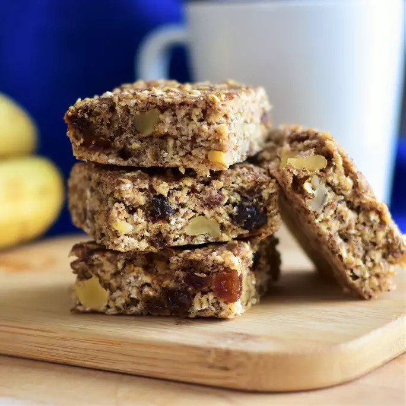

Breakfast Brownies Recipe

About the Dish
This is a hearty breakfast brownie, quick to fix, and yummy. My kids loved it! It's also gluten-free and dairy-free.
Ingredients
- 1 ½ cups quick-cooking oats
- ¾ cup brown sugar
- ¾ cup flax seed meal
- ½ cup gluten-free all purpose baking flour
- 1 teaspoon baking powder
- ½ teaspoon ground cinnamon
- ¼ teaspoon salt
- 1 banana, mashed
- ¼ cup rice milk
- 1 egg
- 1 teaspoon vanilla extract
Steps
- Preheat oven to 350 degrees F (175 degrees C). Lightly grease an 8x10-inch baking pan.
- Mix oats, brown sugar, flax seed meal, flour, baking powder, cinnamon, and salt together in a bowl. Mix banana, rice milk, egg, and vanilla extract together in a separate bowl. Pour banana mixture into flour mixture; stir to combine. Pour batter into the prepared baking pan.
- Bake brownies in the preheated oven until a toothpick inserted in the center comes out clean, about 20 minutes. Cover pan with a towel to hold in moisture and cool brownies for at least 5 minutes before serving.
Return to Home Page